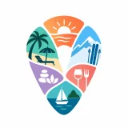

Deporte · Mar del Plata
5022
Todo el rugby marplatense, en un solo lugar.
Problema: los resultados, fixtures y estadísticas del rugby local están dispersos y no hay un lugar único para aficionados, clubes y la Unión.
Universidad CAECE · Sede Mar del Plata · 2do cuatrimestre 2026
En el Taller Emprendedor, equipos de alumnos de Administración detectaron un problema, lo validaron con personas reales y construyeron el MVP de su startup con herramientas de IA. Acá están los resultados.
Cuatro pasos, en orden. Cada equipo recorre el mismo camino con su propia idea.
Identificar un dolor concreto de personas o empresas, y poder explicarlo en una frase.
Salir a hablar con usuarios y clientes para confirmar que el problema existe y importa.
Construir la versión mínima que permite probar la solución, usando herramientas de IA.
Contar la historia del proyecto con datos, demo y un pedido claro.
Cada proyecto tiene su app publicada. Las apps son demostraciones académicas con datos de ejemplo.
Deporte · Mar del Plata
Todo el rugby marplatense, en un solo lugar.
Problema: los resultados, fixtures y estadísticas del rugby local están dispersos y no hay un lugar único para aficionados, clubes y la Unión.
Servicios para el hogar
Profesionales del hogar en los que podés confiar.
Problema: contratar a un plomero, electricista o pintor confiable es difícil: faltan referencias y es complicado comparar precios.
Construcción · B2B
Licitá tu obra y pagá por etapas, con fondos protegidos.
Problema: las PyMEs no tienen una forma ordenada y segura de licitar obras, y los contratistas no ven las oportunidades.

Turismo · Mar del Plata
Encontrá, compará y reservá lo mejor de la costa.
Problema: reservar servicios turísticos locales es informal y está disperso, y los prestadores no tienen un canal simple para ofrecerse.
Turismo · Alojamientos
Gestión simple para alojamientos turísticos chicos.
Problema: los alojamientos pequeños gestionan reservas, disponibilidad y cobros con planillas y mensajes sueltos.
Docente de Taller Emprendedor
Docente de Taller Emprendedor